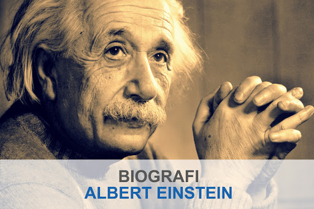
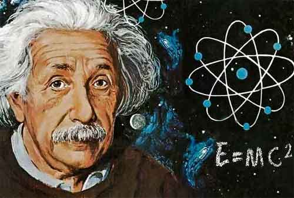

Welcome to the blog of albert eistein
|

Albert Eistein
Nama: Albert Einstein Lahir: Ulm, Kerajaan Württemberg, Kekaisaran Jerman, 14 Maret 1879 Meninggal: 18 April 1955, Princeton, New Jersey, Amerika Serikat Pasangan: Mileva Marić (1903–1919) Elsa Löwenthal, née Einstein, (1919–1936) Tempat tinggal: Jerman, Italia, Swiss, Austria, Belgia, Britania Raya, Amerika Serikat Kewarganegaraan: Württemberg/Jerman (1879–1896) Tanpa kewarganegaraan (1896–1901) Swiss (1901–1955) Austria (1911–1912) Jerman (1914–1933) Amerika Serikat (1940–1955) Bidang: Fisika |

|
Albert Einstein merupakan anak dari pasangan Hermann Einstein dan Pauline. Einstein lahir di Ulm, Kerajaan Württemberg, Kekaisaran Jerman pada 14 Maret 1879. Keluarga einstein termasuk keluarga keturunan Yahudi. Ayah Einstein bekerja sebagai penjaja ranjang burung lalu beralih menjadi ahli elektokimia. Keluarga Einstein sangat konsisten terhadap pendidikan anaknya terutama dalam bidang sains dan musik.
Einstein bersekolah di sekolah katholik dan atas keinginan ibunya ia diberi pelajaran bermain musik. Pada saat berusia 5 tahun, ayah einstein menunjukkan sebuah benda kompas kantung pada Einstein dan Einstein melihat bahwa sesuatu di ruang yang kosong ini bereaksi terhadap jarum dalam kompas tersebut, ia menjelaskan bahwa pengalaman tersebut termasuk salah satu hal yang paling menyenangkan dalam hidupnya dan mulai dari situlah perkenalan Albert Einstein terhadap sains terus ditingkatkan.
Einstein memiliki sifat pendiam dan tidak suka bermain dengan teman-temannya. Selain sekolah dan menggeluti sains, kegiatan einstein hanya bermain musik bersama ibunya memainkan karya Mozart dan Bethoveen. Albert Einstein mengalami kesulitan saat mengikuti mata pelajaran di sekolahnya terutama dalam bidang berhitung dan ilmu alam. Albert Einstein dianggap sebagai murid yang terbelakang di sekolahnya. Hal tersebut disebabkan karena kepribadiannya yang introvet dan pemalu, namun setelah diteliti otaknya saat ia meninggal dunia, hal ini dikarenakan struktur otaknya yang tidak biasa seperti orang pada umumnya. Einstein memiliki kecenderungan berfikir dengan olah pikirnya sendiri sedangkan pelajaran sekolah menyuruh murid berfikir dengan cara orang lain yaitu gurunya.
Pada saat Einstein berusia 15 tahun, keadaan ekonomi keluarganya mengalami kemunduran karena usaha ayahnya dibidang elektronika mengalami kebangkrutan. Hal tersebut membuat Einstein dan keluarganya pindah ke Pavia, Milan-Italia. Einstein tetap tinggal untuk menyelesaikan sekolahnya, dan menyelesaikan satu semester sebelum bersama kembali dengan keluarganya di Pavia. Albert Einstein ingin masuk ke Eidgenössische Technische Hochschule (Institut Teknologi Swiss Federal, di Zurich), tapi ia gagal saat tes. Pada tahun berikutnya ia dikirim keluarganya ke Aarau, Swiss, untuk menyelesaikan sekolah menengahnya, di mana dia menerima gelar diploma pada tahun 1896, Einstein tercatat beberapa kali mendaftar di Eidgenössische Technische Hochschule. Pada saat Einstein berumur 17 tahun, Einstein memutuskan untuk melepas kewarganegaraan dan memilih untuk tidak memiliki kewarganeraan karena kecewa dengan pemerintahan Jerman yang anti Yahudi pada saat itu.
Saat menempuh pendidikan di Eidgenössische Technische Hochschule (Institut Teknologi Swiss Federal, di Zurich), Albert Einstein berkenalan seorang wanita ahli matematikawan bernama Mileva Maric. Einstein jatuh cinta pada Mileva dan akhirnya mereka menjalin hubungan. Mereka memiliki seorang putri bernama Lieserl yang lahir pada bulan Januari 1902, tapi Lieserl Einstein pada saat itu dianggap tidak sah karena orang tuanya tidak menikah. Akhirnya Einstein dan Mileva menikah pada 6 Januari 1903. Lalu mereka dianugerahi anak lagi yang mereka beri nama Hans Albert Einstein yang lahir pada 14 Mei 1904.
Setelah lulus dari Eidgenössische Technische Hochschule (Institut Teknologi Swiss Federal, di Zurich), Einstein memutuskan untuk mencari pekerjaan yang berkaitan dengan pengajaran atau penelitian di almamaternya tapi selalu ditolak dikarenakan sifat Einstein yang terburu-buru dalam bekerja. Kemudian, ayah dari seorang teman di kelasnya menolong Einstein dengan mempromosikannya untuk bekerja di Kantor Paten Swiss sebagai asisten teknik pemeriksa pada tahun 1902. Einstein bertugas menilai aplikasi paten penemu untuk alat yang membutuhkan pengetahuan fisika. Terkadang, Einstein memperbaiki desain dan juga mengevaluasi kepraktisan hasil kerja para calon pemulik hak paten. Pada 1904, posisi Einstein di Kantor Paten Swiss menjadi tetap. Pada tahun 1905, Einstein mendapatkan gelar doktor dari Universitas Zurich setelah menyerahkan thesis “Eine neue Bestimmung der Moleküldimensionen” (On a new determination of molecular dimensions).
Pada tahun 1905, Einstein menulis beberapa artikel atau thesis yang menjadi dasar ilmu fisika modern. Thesis tersebut diantaranya: teori gerak brownian, efek foto listrik dan relativitas khusus. Dalam thesisnya yang berjudul “On the Motion-Required by the Molecular Kinetic Theory of Heat-of Small Particles Suspended in a Stationary Liquid” itu mencakup penelitian tentang gerakan Brownian. Pada saat itu menggunakan teori kinetik cairan merupakan hal kontroversial, setelah beberapa dekade setelah pertama kali diamati, memberikan bukti empirik (atas dasar pengamatan dan eksperimen) kenyataan pada atom. Dan ia juga meminjamkan keyakinan pada mekanika statistika yang pada saat itu juga kontroversial. Sedangkan, Teori Relativitas Khusus Einstein menjelaskan bahwa jika suatu benda yang bermassa m diberi kecepatan cahaya pangkat dua maka akan menghasilkan energi yang begitu besar. Dengan kata lain 1 gram massa dapat menghasilkan energi untuk memasok kebutuhan listrik sebesar 2700000 watt selama setahun penuh. Einstein menulis tentang Teori Relativitas Khusus dengan rumus E=mc². Dimana E adalah potensi energi yang dihasilkan. M adalah massa suatu benda dan C adalah kecepatan cahaya di ruang hampa (c>>300 ribu kilo meter per detik).
Pada 17 April 1955, Albert Einstein mengalami pendarahan internal yang disebabkan karena pecahnya aneurisma aorta perut yang sebelumnya telah dilakukan pembedahan oleh Dr Rudolph Nissen pada tahun 1948. Pada 18 April 1955 di Rumah Sakit Princeton, Einstein meninggal dunia. Selama autopsi, ahli patologi Rumah Sakit Princeton, Thomas Stoltz Harvey, menghapus otak Einstein untuk pengawetan tanpa izin dari keluarga Einstein dengan harapan bahwa ilmu saraf masa depan akan mampu menemukan apa yang membuat Einstein begitu cerdas. Einstein tetap dikremasi dan abunya tersebar di lokasi yang dirahasiakan.